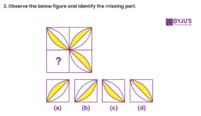
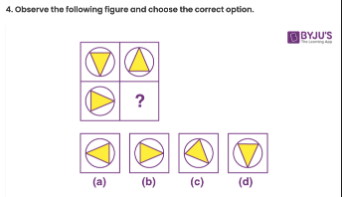
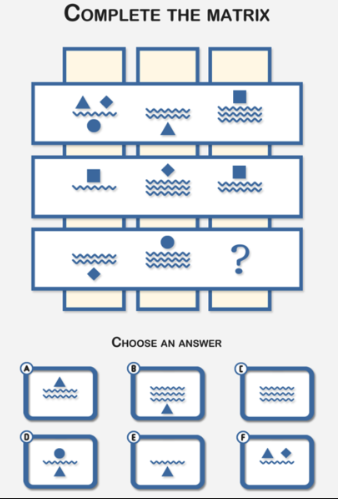
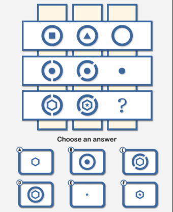
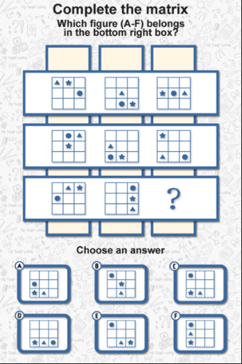

Prompt: Generate an image of ChatGPT taking an IQ test
Top 0.1%
If you ever asked ChatGPT 3.5 to come up with a solution to a question on logic, you probably already know that it is not that precise. However, the story is completely different when we are talking about ChatGPT 4.0. After training the LLM multiple times, performing numerous tests, and adding billions of new parameters, OpenAI genuinely came up with a REALLY intelligent Artificial Intelligence, and I am not kidding: recent studies show that ChatGPT 4.0 has a verbal IQ of approximately 150, which puts it amongst the 0.1% of smartest people on Earth (according to IQ tests’ standards).
Also, as you might be aware, one of the biggest innovations of ChatGPT 4.0 in comparison to ChatGPT 3.5 is its ability to process and generate images and I say from personal experience that it is pretty good doing it. However, while asking ChatGPT to process some images, I noticed that, sometimes, it quite lacks the skills that we expect from such a powerful AI. For instance, I caught ChatGPT more than once making some really “dumb” mistakes while processing or trying to understand images that I inputted in the prompt.
Processing and reasoning on images
That being said, most of the evaluations made on ChatGPT are regarding its capability of processing and “reasoning” on verbal text and written questions. However, I what about images? Is ChatGPT 4.0’s IQ really that high when it comes to questions related to identifying visual patterns such as the ones that we often see in IQ tests?
With this question in mind, I decided to test ChatGPT 4.0 and check if it is truly that smart when answering questions related to identifying visual patterns. Thus, let’s go to the experiment
Question 1

Right answer: b
ChatGPT’s response: In the image, we have a matrix with one square missing and four options below to choose from. This is a typical visual pattern or matrix reasoning problem.
To solve it, we should look for patterns across the rows and columns, considering aspects like shape, color, orientation, and how these elements change from one square to another. Since I can see the image, let me identify the pattern for you.
We see that each corner of the larger square contains a quarter-circle with alternating colors (purple and yellow). The quarter-circles are positioned so that they form a larger circle when the pattern is complete. The pattern alternates between a quarter-circle of yellow with a purple outline and a quarter-circle of purple with a yellow outline. To complete the circle and match the alternation of colors and positions, we need to choose the option that fits this continuation.
Based on the parts of the pattern that are visible, the missing quarter-circle should be yellow with a purple outline, oriented to complete the circle pattern. I will now identify which of the given options (a, b, c, or d) fits this description.
The correct option is (b), as it contains the yellow quarter-circle with a purple outline, oriented to the bottom right corner, which completes the pattern of the larger circle in the matrix.

Right answer: a)
ChatGPT’s response: In this image, there’s another matrix with a missing piece, and four options (a, b, c, d) to choose from to complete the pattern. These types of puzzles require identifying the sequence or the rule that applies to the shapes and colors within the matrix.
Looking at the visible parts of the matrix, we can observe that the figures inside the squares are triangles within circles. The triangles are rotated, and their colors alternate between the squares. Let’s figure out the rule and apply it to find the missing piece.
The correct option is (c), as it contains the yellow triangle oriented to the bottom right, which fits with the alternating rotation and color pattern of the other shapes in the matrix.

Right answer: d)
ChatGPT’s response: This puzzle features a matrix with different shapes in each square. The goal is to determine the rule or pattern that applies to each row and column to deduce the missing shape. Let’s analyze the patterns, and I will identify the missing piece for you.
To find the missing part, we need to identify the pattern. Here’s the logic I can deduce:
Each row contains three different shapes: a circle, a triangle, and a square. Each shape is paired with a pattern of lines below it: wavy lines, zigzag lines, or straight lines. In each row, the shapes and the line patterns vary in a way that each combination is unique. By applying this pattern to the third row, we can see that we already have a circle with wavy lines and a triangle with zigzag lines. To complete the unique set, we need a square with straight lines.
Looking at the answer choices:
- is a triangle, which is not the shape we’re looking for.
- has the wavy lines, which are already present in the row.
- has the zigzag lines, which are also already present.
- is a circle, not a square.
- has the wavy lines, so it’s not the one.
- shows a square with straight lines below it. Therefore, the correct answer is (F) – it’s the only option that completes the pattern by providing a unique combination of shape and line pattern that isn’t already present in the row.

Right answer: a)
ChatGPT’s response: Let’s observe the patterns in this new matrix. It seems to involve shapes within shapes, and we’re looking to determine the correct inner shape for the final square. Let’s figure out the missing piece together.
In this puzzle, we see an outer shape and an inner shape in each square of the matrix. Here’s the pattern that seems to be emerging:
The first row has solid shapes inside hollow shapes: a solid square inside a hollow circle, a solid triangle inside a hollow square, and a solid circle inside a hollow triangle. The second row has concentric shapes: a target-like circle, a spiral, and a solid dot which might represent the center of a target. Following this pattern, the third row should have:
A hexagon with an inner shape that is different from the shapes present in the same row. Since we have a hexagon and a star, the inner shape should neither be a hexagon nor a star. Checking the answer choices:
- is a hexagon inside a hexagon, which doesn’t introduce a new shape.
- is a target-like circle, which doesn’t fit the row’s pattern.
- is a hexagon inside an octagon, which fits the pattern of a different shape within another.
- is a hexagon inside a hexagon, repeating the outer shape.
- is a star inside a hexagon, but we already have a star in the row.
- is a star inside an octagon, which is not the correct pattern for the row. So, the correct answer is (C), a hexagon inside an octagon, as it follows the row’s pattern of a solid shape within a different hollow shape.

Right answer: c)
ChatGPT’s response: This matrix is filled with grids containing different shapes. To solve the puzzle, I’ll need to find the pattern governing the placement of these shapes. Let’s crack this one!
It looks like each square in the matrix has a pattern of shapes that follows certain rules. The first row is empty, so we can’t use that for a pattern, but we can look at the second and third rows for clues:
In the second row, each square seems to have the same set of shapes: one circle, one star, and one triangle, but their positions change from left to right. In the third row, we see the shapes rotate positions clockwise with each step from left to right. Assuming this pattern holds, the bottom right square should have the circle in the bottom left, the star in the top left, and the triangle in the bottom right, to continue the clockwise rotation of shapes.
Among the options given (A-F), the one that matches this description is:
- has the correct positions but includes an extra circle.
- has the circle in the correct position but the star and triangle are not.
- also has the circle in the correct position, but again the star and triangle are not.
- matches the expected pattern with the circle in the bottom left, the star in the top left, and the triangle in the bottom right.
- has only two shapes and thus is incorrect.
- has a correct position for the star but is incorrect for the circle and triangle. The correct answer is (D), as it follows the clockwise rotation pattern established in the previous squares of the row.
It did not work that well…
Considering that out of 5 questions ChatGPT answered correctly a total of 0 questions, I think it is quite reasonable to assume that, no, ChatGPT is still not a genius, at least when it comes to answering pattern identification questions. So, sit down and relax; if your job is correctly answering IQ pattern recognition questions, you still have some years leading the field.
Thank you for reading!